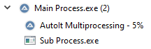

AutoIt Multiprocessing
About:
This program is intended to be a basic example demonstrating how multiprocessing can be achieved in AutoIt. AutoIt is a language that does not have any support for multithreading, therefore, this project aims to address that issue by offering an alternative solution.
There are 2 components to this example, the Main Process (which handles the GUI) and the Sub Process (which pretends to do a lot of work in the background). The Main Process and the Sub Process are able to communicate with each other via STDIN and STDOUT. The Sub Process can report on its progress to the Main Process and it can notify the Main Process if it runs into a problem, this way the user may decide what to do. The Sub Process can also be paused and unpaused by the Main Process, and can also be canceled. The Main Process also has a textbox that will display everything that it reads in from the Sub Process.
Icon Credit:
The icon I used for the tile is just a standard AutoIt icon that I stacked up 3 times.